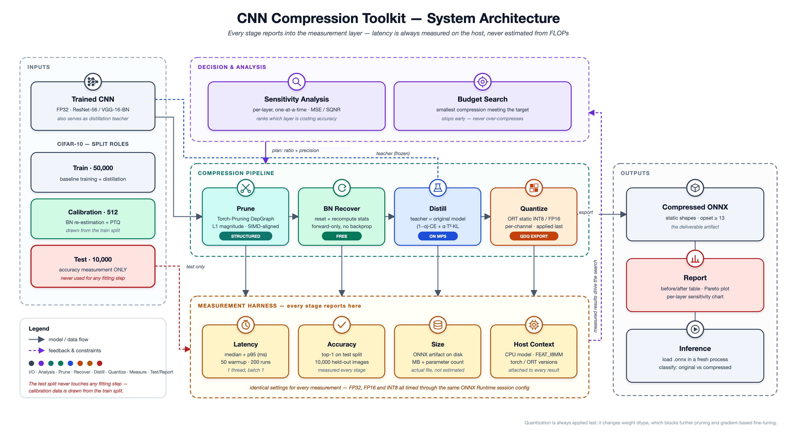

CNN Compression Toolkit: A Measurement-First Approach to CPU Model Compression
Abstract
Neural network compression is routinely evaluated using proxy metrics — floating-point operation counts (FLOPs), parameter counts, and model file size. This project argues, and demonstrates, that these proxies are unreliable predictors of the quantity practitioners actually care about on CPU deployment targets: wall-clock inference latency.
We present a compression toolkit for convolutional neural networks that applies structured channel pruning, batch-normalisation re-estimation, knowledge distillation, and INT8/FP16 quantization in a principled order, and that judges the contribution of every stage by measured wall-clock latency on the actual host machine rather than by estimation. A survey of thirteen papers spanning pruning, quantization, and distillation establishes both the design rationale and the research gap: nine of the thirteen report only FLOPs, parameters, or model size, and none report CPU latency against a named instruction-set architecture. The toolkit's central experimental result quantifies the divergence between parameter reduction and realised speedup — a gap that the surveyed literature repeatedly implies but never systematically measures.
1Introduction
1.1Problem Statement
Modern convolutional networks are over-parameterised relative to the hardware available for inference on commodity machines. Three families of technique address this — pruning (removing structure), quantization (reducing numerical precision), and knowledge distillation (transferring behaviour to a smaller model). Each is individually mature; existing libraries implement them well.
The problem this project addresses is not the absence of algorithms, but the absence of honest, hardware-grounded accounting of what those algorithms deliver. A compression pipeline that reports "50% FLOPs reduction" makes an implicit promise of a 2× speedup that the target CPU frequently does not honour. Three mechanisms cause this divergence:
- Memory-bound layers do not accelerate. Depthwise-separable convolutions have a low compute-to-communication ratio; removing channels reduces FLOPs but not wall-clock time.
- SIMD width quantises the benefit. Channel counts that are not multiples of the vector register width receive little of the expected speedup, producing a "staircase" rather than a linear response.
- Low-precision speedup is kernel-dependent. INT8 arithmetic accelerates only where the runtime provides an optimised kernel for the target instruction set. Where it does not, INT8 can be slower than FP32.
1.2Objectives
- Implement a working compression pipeline — prune → recover → distill → quantize — producing a deployable ONNX artifact from a trained PyTorch CNN.
- Measure latency, top-1 accuracy, and disk size after every stage under identical, recorded conditions.
- Provide per-layer sensitivity diagnosis identifying which layers are responsible for accuracy loss.
- Implement budget-driven compression that stops as soon as a user-stated target is met, rather than compressing maximally.
- Quantify the divergence between parameter reduction and measured speedup across a systematic sweep of compression ratios and numeric precisions.
1.3Contributions
Every performance claim produced by this toolkit is a measured wall-clock quantity obtained on the host under recorded conditions. No FLOPs-derived or parameter-derived speedup is reported anywhere in the system, including in its own ranking metric — which required modifying the Efficiency Score adopted from the literature, since the published form is FLOPs-based (§6.7).
- A per-stage attribution method. Measuring after pruning but before fine-tuning isolates how much accuracy batch-norm re-estimation alone recovers — a quantity absent from the surveyed corpus.
- A translation-efficiency metric η (§6.7) that expresses realised speedup as a fraction of the speedup implied by parameter reduction, making the FLOPs-to-latency gap a directly reportable number.
- A critical appraisal of the evidence base (§3.6) identifying four papers whose headline claims do not survive inspection.
1.4Scope
| In scope | Out of scope — and why |
|---|---|
| Structured (channel) pruning | Unstructured pruning — yields no CPU speedup without sparse kernels |
| Knowledge distillation for accuracy recovery | Feature/relation-based KD — added complexity, no measurement payoff |
| INT8 / FP16 post-training quantization | Sub-8-bit — no native CPU kernel path exists |
| Per-layer sensitivity analysis | NAS — the project compresses given models, it does not design new ones |
| Convolutional networks (CIFAR-scale) | Transformers / LLMs — different bottlenecks, crowded field |
| Local execution on a single machine | Deployment, serving, cloud, CI, multi-machine benchmarking |
| Measured latency, accuracy, size | Low-rank decomposition, weight clustering, reparameterisation |
2Background
2.1Pruning
Pruning removes parameters judged unimportant. The critical distinction is granularity, because it determines whether the reduction is realisable on hardware.
| Granularity | What is removed | Tensor shrinks? | CPU speedup |
|---|---|---|---|
| Unstructured | Individual weights | No — zeros in place | None without sparse kernels |
| Semi-structured (N:M) | N of every M weights | No | Requires specific hardware support |
| Structured | Entire channels / filters | Yes — genuinely smaller | Real, but sub-linear |
Only structured pruning produces a physically smaller tensor and therefore a real latency reduction on a CPU without specialised kernel support. The corpus is explicit on the mechanism: unstructured sparsity "has no continuity in the distribution, which lead to frequent handover between CPU cache and memory, which restricted the actual acceleration effect" [6].
Structured pruning is complicated by dependency coupling: in a residual architecture, removing an output channel from a convolution inside a block forces the same removal in every tensor that is summed with it. Handling this correctly requires tracing the computation graph, which is what Torch-Pruning's DepGraph algorithm provides and why this project wraps it rather than implementing channel surgery manually.
2.2Quantization
Quantization maps floating-point values onto a lower-precision integer grid, reducing both memory traffic and — where a matching kernel exists — arithmetic cost. Two axes matter:
- When: Post-training quantization (PTQ) calibrates on a small unlabelled sample and requires no gradient computation. Quantization-aware training (QAT) simulates quantization during training so the network adapts to the induced noise, at substantially higher cost.
- Granularity: per-tensor uses one scale for an entire weight tensor; per-channel uses one scale per output channel and is markedly more robust for convolutions, at negligible cost.
INT8 memory savings are unconditional; INT8 latency savings are not. Speedup requires the runtime to dispatch an optimised low-precision kernel for the host instruction set. As one surveyed paper states plainly, "any wall-clock latency improvements depend critically on the availability and quality of low-precision kernels on the target hardware" [11].
2.3Knowledge Distillation
Distillation trains a compact student to match the output distribution of a larger teacher. The teacher's soft probability distribution carries information about inter-class similarity that hard labels discard — "dark knowledge". Approaches divide into logit-based (matching output distributions), feature-based (matching intermediate activations), and relation-based (matching relationships between samples).
This project uses logit-based distillation with the original uncompressed model as the teacher. This design, termed Compression-Aware KD in the corpus [1], eliminates the need to train or store a separate teacher network — the pre-compression checkpoint already exists and is, by construction, the best available teacher for its own compressed derivative. Logit-only distillation is also the cheaper choice: it requires no feature hooks and no architectural correspondence between teacher and student.
2.4Why FLOPs Do Not Predict Latency
The assumption that FLOPs proxy for latency requires that arithmetic throughput be the binding constraint. On CPU inference at batch size 1, it frequently is not — memory bandwidth, cache behaviour, kernel dispatch, and vector width all intervene. The corpus supplies direct counter-evidence:
| Source | Hardware | Proxy reduction | Measured gain | η |
|---|---|---|---|---|
| Chen et al. [6] | Raspberry Pi 3 (ARM A53) | 30% of parameters | 14.6% latency | 0.49 |
| AMC [4] | Pixel-1 (Snapdragon 821) | 2× FLOPs (50%) | 1.81× (44.6%) | 0.89 |
| AMC, latency-targeted [4] | Pixel-1 | 2.09× FLOPs | 1.95× (48.7%) | 0.93 |
| Rafee et al. [8] | ESP32-S3 (Xtensa) | 2.80× FLOPs | 2.87× | 1.01 |
| Qiu et al. [12] | Tesla V100 | 2.6× more FLOPs | faster wall-clock | — |
Translation efficiency η (defined in §6.7) ranges from 0.49 to 1.01 across these measurements, each computed directly from the row's own published numbers rather than taken from the source paper (which reports none of them). Critically, AMC's two rows isolate the effect of the search objective alone, holding model and hardware fixed: targeting FLOPs yields η = 0.89, while targeting measured latency directly — at a very similar proxy reduction (52.2% vs 49.9%) — raises it to η = 0.93. Optimising against the quantity you actually want therefore converts proxy reduction into latency more efficiently, even though neither search fully converts it: both remain below the η = 1 line. This partial, rather than complete, improvement is the empirical basis for the project's design stance — measuring directly helps, but is not a substitute for measuring the compressed model itself rather than a proxy.
3Literature Survey
3.1Review Method
Thirteen documents were assembled covering pruning, quantization, and distillation for
resource-constrained inference. Each was assessed on four axes: (i) technique category, (ii) whether
results are measured on hardware or estimated from proxies, (iii) the specific hardware and runtime
named, and (iv) internal consistency of the reported claims. A systematic keyword search across the
full corpus for instruction-set and runtime identifiers —
AVX, AVX2, AVX-512, VNNI, NEON,
oneDNN, XNNPACK, OpenVINO, FBGEMM — returned
zero matches.
3.2Corpus Index
| # | Work | Category | Evidence | Hardware |
|---|---|---|---|---|
| 1 | Chae & Seo — Pipeline of Pruning, KD, Quantization | PruneKDQuant | Proxy | RTX 3090 (training only) |
| 2 | Wang et al. — Iterative KD and Pruning (ITMC) | PruneKD | Proxy | RTX 4090 |
| 3 | Abdel-Salam et al. — VLCQ | Quant | Proxy | Tesla P100 |
| 4 | He et al. — AMC (ECCV 2018) | Prune | Measured HW | Pixel-1, Snapdragon 821 |
| 5 | Chen et al. — Quantization for Accurate Edge | Quant | Proxy | Not named |
| 6 | Chen et al. — DNN compression via knowledge transfer | PruneKD | Measured HW | Raspberry Pi 3, Titan X |
| 7 | Khan & Rafat — CQKD | PruneQuantKD | Unreliable | Not named |
| 8 | Rafee et al. — Composite HAR | KDQuant | Measured HW | ESP32-S3 (240 MHz MCU) |
| 9 | Xu et al. — Head/Tail Categories (ReKD) | KD | Accuracy only | Not applicable |
| 10 | Fang et al. — Federated Learning with QAT | Quant | Single sentence | Intel i7-12700K |
| 11 | Zhou et al. — AEMC (LLM depth pruning) | Prune | Memory only | GPU memory only |
| 12 | Qiu et al. — Dynamic Conv + Vision Mamba | Off-topic | Measured (codec) | Tesla V100 |
| 13 | Model Compression Studio (product spec) | Design doc | None | Not applicable |
Only 4 of 13 works report wall-clock latency on named hardware, and all four use ARM mobile, ARM embedded, or microcontroller targets. Zero report x86 CPU latency against a named instruction set. Nine report FLOPs, parameters, or file size exclusively. Nothing in the corpus addresses operator fusion, memory layout, thread count, or batch-1 single-thread inference — the regime in which a commodity CPU actually operates.
3.3Evidence on Stage Ordering
The corpus contains three mutually incompatible positions on how to sequence the techniques.
Position A — fixed sequential order, quantization last
Chae & Seo [1] propose prune → KD-assisted fine-tune → QAT → INT8, and justify quantization-last through a feasibility analysis: converting weights to integer representation changes the dtype, which breaks structural pruning and complicates gradient-based fine-tuning. Their feasibility matrix marks Quantization→Pruning and Quantization→KD as infeasible on grounds of "data incompatibility".
| Combination | Feasibility | Constraint |
|---|---|---|
| Pruning → Quantization | ○ | — |
| Pruning → KD | △ | External teacher required |
| Quantization → Pruning | ✗ | Dtype incompatibility |
| Quantization → KD | ✗ | Dtype incompatibility |
| KD → Pruning | △ | External teacher required |
| KD → Quantization | △ | External teacher required |
Their reported single-technique results are directly useful as reference magnitudes:
| Configuration | Top-1 | Δ | Size |
|---|---|---|---|
| Baseline FP32 | 71.84% | — | 3.44 MB |
| FP16 only | 71.85% | +0.01 pp | 1.78 MB |
| INT8 (after QAT) | 71.09% | −0.75 pp | 1.06 MB |
| Pruning 0.3 | 69.18% | −2.66 pp | 1.70 MB |
| Pruning 0.4 | 65.58% | −6.26 pp | 1.30 MB |
| Pruning 0.5 | 63.70% | −8.14 pp | 0.97 MB |
Position B — reject sequencing entirely
Wang et al. [2] measured both sequential orderings and found both inferior to either technique used alone:
| Method | Mean accuracy | Interpretation |
|---|---|---|
| Pruning only (TCP) | 77.2 | Single technique |
| KD only (PKD) | 77.1 | Single technique |
| KD → Prune | 76.6 | Worse than either alone |
| Prune → KD | 75.5 | Worse than either alone |
| Interleaved per-epoch (ITMC) | 81.6 | +4.4 over best single |
Their conclusion is that "KD and pruning should be seamlessly orchestrated during the training instead of treating them as two independent phases." This is the strongest ordering evidence in the corpus and it argues against the sequential design. Two caveats bound its applicability: the result is obtained in an unsupervised domain-adaptation regime with distribution shift, and interleaving requires a training loop at every pruning step — computationally prohibitive as a default on a CPU-only budget.
Position C — lightweight architecture first, no quantization
Chen et al. [6] order the pipeline as architecture-lightweighting → KD → iterative pruning, omitting quantization entirely, and are the only work in the corpus to report ARM CPU wall-clock for a CNN classifier.
This project adopts prune → BN-recover → distill → quantize. Quantization-last follows from Position A's dtype constraint, which is a hard engineering fact rather than a contested empirical claim. Position B's interleaving finding is honoured within the pruning stage — pruning proceeds in small iterative steps with recovery between them — but full per-epoch interleaving is deferred as computationally infeasible for the default path.
3.4Evidence on Quantization Cost
Reported INT8 accuracy cost varies across the corpus by roughly a factor of eight:
| Model | Scheme | Accuracy cost | Outcome |
|---|---|---|---|
| Small VGG-16 (5 conv) | 4/8-bit INQ | −0.02 pp | Negligible |
| ResNet-56 / CIFAR-100 | QAT → INT8 | −0.75 pp | Acceptable |
| MobileNetV2 | PTQ ~4.4-bit weights | −1.60 pp | Acceptable |
| Simplified segmentation net | 4-bit INQ | −4.40 pp | Marginal |
| 51K-param 1D CNN | PTQ INT8 | −6.12 pp | Rejected — shipped FP32 |
Already-compact models tolerate quantization substantially worse than over-parameterised ones. Chen et al. [5] state it directly: "if the original model is already simplified, the inhibiting effect of quantization will be faded." Rafee et al. [8] independently confirm it, measuring −6.12 pp on a 51K-parameter network and rejecting INT8 deployment as a result.
Design consequence. Pruning removes precisely the redundancy that absorbs quantization noise. Therefore a quantization accuracy measurement taken on the dense model is systematically optimistic about the same model after pruning, and must not be carried forward as a budget. This motivates measuring quantization damage on the compressed model, not the original.
3.5Evidence on Compression-to-Latency Translation
AMC [4] is the corpus's methodological high point: it is the only work that closes the loop by searching directly against measured latency, and the only one that identifies which layer types resist acceleration.
| Configuration | MMAC | Top-1 | CPU total | Speedup |
|---|---|---|---|---|
| 1.0 MobileNet-V1 baseline | 569 | 70.9% | 123.3 ms | 1.00× |
| AMC, 0.5× FLOPs constraint | 285 | 70.5% | 68.3 ms | 1.81× |
| AMC, 0.5× latency constraint | 272 | 70.2% | 63.3 ms | 1.95× |
AMC's per-layer observation is the direct justification for this project's per-layer allocation design:
"We achieve 2.01× speed up for 1×1 convolution but less significant speed up for depth-wise convolution due to the small computation to communication ratio." [4]
Rafee et al. [8] supply the complementary per-operator profile: on their network, three convolution layers accounted for 1,809,050 µs of a 1,836,271 µs total — 98.5% of inference time — while all dense layers combined contributed 3.1 ms. Pruning fully-connected parameters, a common default because they are numerous, is therefore close to worthless for latency.
3.6Critical Appraisal
Four works have headline claims that do not survive inspection and are therefore not used as design evidence.
(i) The abstract reports "97.9% on CIFAR-10 and 91.2% on CIFAR-100"; these are training accuracies. Table 1 gives test accuracy as 87.39% (CIFAR-10) and 53.61% (CIFAR-100) — a ~38 pp generalisation gap presented as a success. (ii) The "34,000×" compression ratio is defined as R = n/k, the ratio of weights to cluster centroids. This counts only the centroid table and omits the per-weight cluster index (n·⌈log₂k⌉ bits), which dominates storage. The figure is not physically realisable.
Excellent accuracy-per-bit results, but the paper concedes that variable-length Golomb decoding is inherently serial and that "software implementation … would incur a time penalty for decoding the weights." It is a memory-footprint technique, not a latency technique, on any CPU target.
States that "as activations are in floating-point representation, the runtime is not affected" — a memory-only result with zero speedup. Its headline accuracy improvements additionally require ensembling 2–7 models, which multiplies inference cost.
The lone x86 latency figure in the corpus (i7-12700K, 1.499 ms → 605 ms at 4-bit) appears in one sentence with no methodology, batch size, runtime, or variance. Furthermore, 4-bit weight+activation GEMM has no native x86 instruction path, so the 4-bit-versus-8-bit latency distinction is likely an artefact of unpacking or simulation.
A further consistency issue affects the primary ordering reference: Chae & Seo's Table 2 lists Pruning(0.5) at 32.10 MFLOPs while Table 4 lists the same configuration at 64.20 MFLOPs, and the headline CAKD contribution is supported only by scatter plots with no numeric table. The paper is cited here for its dtype-ordering constraint, which is mechanically verifiable, and not for the magnitude of its CAKD result.
Item 13 in the corpus, the "Model Compression Studio" specification [13], is not a research paper but an earlier design document for this same project, included in the corpus for completeness rather than as external evidence. It is superseded by the present design on two points: its central design constraint was a 4 GB GPU rather than a CPU-only host, and its proposed stage order was prune → quantize → KD — placing quantization before distillation, which Position A's feasibility analysis marks infeasible (Table 5) and which the interleaving evidence of Position B also argues against. It is retained in Table 4 as a record of the design's starting point, not as supporting evidence for the design ultimately adopted.
3.7Identified Research Gap
The corpus establishes that compression-to-latency translation is (a) sub-linear, (b) strongly layer-type dependent, and (c) hardware-and-kernel dependent. Yet nine of thirteen works report only proxy metrics, no work reports x86 CPU latency against a named instruction set, and no work measures the contribution of individual pipeline stages under identical conditions. The gap is not a missing algorithm — it is missing measurement.
4Proposed System
4.1Design Thesis
Every stage of compression is judged by measured wall-clock latency on the actual host machine, never by FLOPs or parameter count — and the resulting measurements show that proxy reduction does not translate proportionally into speedup.
4.2Design Principles
- Measure, never estimate. No FLOPs- or parameter-derived speedup claim appears anywhere, including in the ranking metric.
- Measurement is infrastructure, not a feature. A single harness with fixed, recorded settings serves all stages, making cross-stage numbers comparable by construction.
- Free recovery before expensive recovery. Batch-norm re-estimation costs forward passes only and is exhausted before any gradient-based fine-tuning is attempted.
- Wrap mature implementations. Dependency-graph pruning and quantization numerics are solved problems; re-implementing them adds risk without contribution.
- Stop when the target is met. Budget-driven search compresses the minimum necessary rather than the maximum possible.
- Test data is sacred. The test split participates in no fitting step of any kind.
4.3Pipeline
Each stage is followed by a measurement, so its individual contribution is attributable. The ordering is forced by the dtype constraint established in §3.3: quantization converts weights to an integer representation, after which structural pruning and gradient-based fine-tuning are no longer available.
Measuring after stage 2 but before stage 3 isolates how much accuracy batch-norm re-estimation alone recovers. Because pruning invalidates the running mean and variance accumulated by every batch-norm layer, a substantial part of the apparent accuracy loss from pruning is a statistics artefact rather than genuine capacity loss — recoverable without any gradient computation.
4.4Deliberate Exclusions
| Excluded | Justification |
|---|---|
| Unstructured pruning as a latency feature | No CPU speedup without sparse kernels; causes cache/memory thrashing [6] |
| Weight clustering / K-means quantization | Optimises disk footprint via a codebook, not throughput; corpus instance additionally unreliable (§3.6) |
| Variable-length coded quantization | Serial decode penalty in software; storage technique, not latency technique |
| Sub-8-bit quantization | No native CPU kernel path; reported speedups are unpacking artefacts |
| Low-rank / tensor decomposition | Requires heavy retraining; composes poorly with small 3×3/1×1 kernels |
| Neural architecture search | Off-mission — the system compresses supplied models, it does not design new ones |
| Feature/relation-based KD | Higher training cost for no measurement benefit; logit KD is competitive [9] |
| Quantization-aware training (v1) | Iterative training on CPU is prohibitive; PTQ with per-channel scales is the affordable path |
5System Architecture
5.1Overview

5.2Layered Design
The architecture inverts the conventional arrangement in which each stage reports its own metrics. Here a single measurement layer underpins all stages. This is the structural expression of the design thesis: if stages measured themselves independently, differences in warmup, threading, or batch size would make cross-stage comparison meaningless, and comparability is precisely what the project claims.
| Layer | Responsibility | Depends on |
|---|---|---|
| L0 · Inputs | Trained FP32 checkpoint; CIFAR-10 splits with enforced role separation | — |
| L1 · Measurement | Latency, accuracy, size, host context under fixed recorded settings | ONNX Runtime |
| L2 · Analysis | Per-layer sensitivity; budget-driven search with early exit | L1 |
| L3 · Transform | Prune, BN-recover, distill, quantize — each a pure model→model function | L1, L2 |
| L4 · Export | ONNX serialisation, static shapes, opset ≥ 13 | L3 |
| L5 · Report | Before/after tables, Pareto front, sensitivity chart | L1 |
| L6 · Consume | Load artifact in a fresh process and classify | L4 |
5.3Component Specifications
| Component | Implementation | Key parameters |
|---|---|---|
| Latency measurement | ORT InferenceSession, CPUExecutionProvider | 50 warmup, 200 timed runs, 1 thread, batch 1 |
| Accuracy measurement | Top-1 over the test split | 10,000 held-out images |
| Size measurement | On-disk byte count of the ONNX file | Actual file, not estimated |
| Structured pruning | Torch-Pruning DependencyGraph | L1 magnitude, alignment A ∈ {8,16,32} |
| BN re-estimation | Reset running_mean/running_var, forward in train mode | 512 calibration images |
| Distillation | KL divergence on temperature-softened logits | α ≈ 0.3, T ≈ 4, MPS device |
| Quantization | ORT quantize_static, QDQ format | Per-channel weights, INT8 / FP16 |
| Sensitivity | One-at-a-time layer perturbation | MSE and SQNR per layer |
5.4Data Hygiene Design
Three dataset roles are separated by construction rather than by convention, and the separation is represented explicitly in the architecture (Figure 1):
| Split | Size | Permitted use | Prohibited use |
|---|---|---|---|
| Train | 50,000 | Baseline training, distillation fine-tuning | Any accuracy reporting |
| Calibration | 512 | BN re-estimation, PTQ calibration | Any accuracy reporting |
| Test | 10,000 | Accuracy reporting only | Every fitting step |
The calibration subset is drawn from the train split, never the test split, because quantization calibration and batch-norm re-estimation both fit parameters to the data they observe. Drawing calibration data from the test set would render the reported accuracy an optimistically biased estimate. The corpus contains a direct cautionary instance: a paper whose headline figures collapse from 97.9% to 87.4% once test rather than training accuracy is read (§3.6).
5.5Module Structure
compresskit/
models.py CIFAR ResNet-20/56, VGG-16-BN definitions
data.py CIFAR-10 loaders; train / calibration / test role separation
benchmark.py latency (warmup, median, p95), accuracy, size, host context
prune.py Torch-Pruning wrapper: L1 magnitude, SIMD alignment
recover.py batch-norm re-estimation
distill.py KD fine-tune, teacher = original model
quantize.py ONNX export + ORT static INT8 / FP16
sensitivity.py per-layer one-at-a-time MSE / SQNR analysis
search.py budget-driven search with early exit
report.py before/after tables, Pareto plot, sensitivity chart
cli.py compress(model, budget) entry point
experiments/
train_baseline.py train ResNet-56 / VGG-16-BN on CIFAR-10 (MPS)
run_sweep.py ratio x precision sweep
demo.ipynb one image, original vs compressed, side by side6Mathematical Formulation
6.1Notation
| Symbol | Meaning |
|---|---|
| f, fθ | Network, parameterised by θ |
| W(l) ∈ ℝCout×Cin×k×k | Weight tensor of convolutional layer l |
| zT, zS | Teacher and student logits |
| r | Pruning ratio (fraction of channels removed) |
| A | SIMD alignment constant, A ∈ {8, 16, 32} |
| s, z | Quantization scale and zero-point |
| b | Bit-width |
| T | Measured latency (ms) — or KD temperature where stated |
| M | A source's own claimed proxy metric (parameter count or FLOPs — §6.7) |
| 𝒟cal, 𝒟test | Calibration and test sets |
6.2Structured Pruning
Channel importance. The L1 magnitude of each output channel's filter slice:
where c ∈ {1…C_out} indexes output channels of layer l.
Importance is normalised within each layer so that thresholds are comparable across layers of differing scale:
SIMD-aligned channel count. The naive kept-channel count (1−r)·Cout is snapped to a multiple of the vector width, as a hard constraint applied during selection rather than as post-hoc rounding:
The outer max(A, ·) guarantees no layer is pruned below one full vector width.
Selection. The retained channel set is the top-Coutkeep by importance:
Dependency coupling. Layers whose outputs are summed (residual connections) or concatenated must be pruned identically. For a coupling group 𝒢 discovered by the dependency graph:
Violating (5) produces shape mismatch at the residual addition. Enforcing it is the reason Torch-Pruning's DepGraph is used rather than per-layer channel selection.
6.3Batch-Normalisation Re-estimation
Removing channels invalidates the running statistics each BN layer accumulated during training, since those statistics describe activation distributions that no longer exist. They are recomputed by forward passes over the calibration set, with no gradient computation:
The normalisation applied at inference then uses the corrected statistics with the retained affine parameters:
6.4Knowledge Distillation
The temperature-softened distribution over classes for logits z:
The distillation objective combines hard-label cross-entropy with the Kullback–Leibler divergence between softened teacher and student distributions:
α ≈ 0.3 balances the two terms; T ≈ 4 softens the distributions to expose inter-class similarity. The T² factor is required because the gradient of the softened cross-entropy scales as 1/T², so without it the KD term's gradient contribution would shrink quadratically with temperature.
In this project the teacher is the original uncompressed model, held frozen: zT = fθ₀(x). No separate teacher is trained or stored, and the teacher is by construction the best available reference for its own compressed derivative.
6.5Quantization
Affine (asymmetric) uniform quantization. A real value x maps to a b-bit integer grid:
with de-quantization recovering an approximation of the original:
The scale and zero-point follow from the observed dynamic range [xmin, xmax]:
Symmetric per-channel weight quantization. For weights this project uses a symmetric scheme (z = 0) with an independent scale per output channel:
Per-channel scaling matters because channel weight magnitudes within one convolution routinely differ by an order of magnitude; a single per-tensor scale would force small-magnitude channels into very few quantization levels.
Calibration objective. Rather than using the raw observed min/max, which is sensitive to outliers, the clipping range is chosen to minimise expected reconstruction error:
QDQ representation. ONNX Runtime's static quantization inserts explicit Quantize–DeQuantize pairs around operators, allowing the runtime to fuse them into a genuine low-precision kernel where one exists for the host ISA, and to fall back to floating point where one does not:
6.6Per-Layer Sensitivity
Sensitivity is measured by perturbing exactly one layer while holding all others at full precision, isolating that layer's contribution to output degradation. Let fl denote the network with only layer l quantized.
Output mean squared error:
Signal-to-quantization-noise ratio, in decibels — scale-invariant, and therefore comparable across layers with different activation magnitudes:
Accuracy damage attributable to layer l:
A high Dl with low SQNR identifies a layer that should be retained at higher precision — the basis for a mixed-precision fallback.
6.7Evaluation Metrics and Search
Latency statistics. From N timed runs {t1…tN} after discarding W warmup iterations, with order statistics t(1) ≤ … ≤ t(N):
The median is reported rather than the mean because operating-system scheduling produces a right-skewed distribution; p95 is reported alongside it to expose tail behaviour that the median conceals.
Efficiency Score (modified). The corpus proposes ranking configurations by the harmonic mean of accuracy and a compression score [1]. The published compression term is FLOPs-based, which contradicts this project's central premise, so the FLOPs term is replaced by measured latency reduction:
Subscript 0 denotes the uncompressed baseline; S is on-disk size. The harmonic mean penalises configurations that sacrifice one dimension heavily to gain in the other.
Translation efficiency. The project's headline analytical quantity — realised speedup as a fraction of the speedup implied by whichever proxy metric was claimed:
M is the proxy metric as reported by the source being evaluated — parameter count where that is what the source claims, FLOPs/MACs where that is what the source claims. The two are deliberately not conflated into one column of Table 3: η answers "how much of *this source's own claimed reduction* survived contact with a real clock", so M is whatever that source measured before compression was applied. η = 1 means the claimed reduction translated fully into latency reduction; η < 1 means it did not; η > 1 would mean latency improved by *more* than the proxy implied. The corpus datapoint of 30% parameters removed for 14.6% latency gain corresponds to η ≈ 0.49 — less than half of the implied benefit realised (Table 3).
Budget-driven search. Given a latency budget Tb and an accuracy-drop budget Ab, the search returns the least aggressive configuration satisfying both, rather than the most compressed:
Θ is the configuration space of (pruning ratio, precision). Both constraint quantities are measured, not predicted, so evaluation of feasibility requires an actual benchmark run — which is why the search proceeds greedily over a coarse ratio grid rather than by continuous optimisation.
7Methodology
7.1Data and Models
Dataset. CIFAR-10 — 60,000 32×32 colour images across 10 classes, split 50,000 train / 10,000 test. Normalisation uses per-channel statistics μ = (0.4914, 0.4822, 0.4465), σ = (0.2470, 0.2435, 0.2616). Training augmentation is random 32×32 crop with 4-pixel padding plus random horizontal flip; evaluation applies normalisation only.
| Model | Structure | Role |
|---|---|---|
| ResNet-56 | 9 BasicBlocks per stage, channels 16/32/64, 6n+2 layers | Primary subject — residual coupling makes pruning non-trivial and exercises DepGraph |
| VGG-16-BN | 13 conv layers with batch-norm, single FC head | Secondary — plain sequential topology; cleanest setting to expose the SIMD alignment staircase |
| MobileNetV2 (optional) | Depthwise-separable, ImageNet-pretrained | Contrast case — depthwise convolutions resist both pruning speedup and INT8 acceleration |
7.2Measurement Protocol
The protocol below is fixed for every measurement in the project. Deviating for any single measurement would invalidate cross-stage comparison, which is the project's central claim.
| Parameter | Value | Rationale |
|---|---|---|
| Runtime | ONNX Runtime, CPUExecutionProvider | FP32, FP16 and INT8 compared on one runtime |
| Graph optimisation | ORT_ENABLE_ALL | Fusion applied uniformly, so it is not a confound |
| Threads | intra_op = 1, inter_op = 1 | Eliminates scheduling variance; matches batch-1 CPU inference |
| Batch size | 1 | The realistic single-sample inference regime |
| Warmup | 50 iterations, discarded | Excludes allocation, page faults, cache warming |
| Timed runs | 200 | Sufficient for stable median and p95 order statistics |
| Reported | Median, p95, standard deviation | Median resists right-skew; p95 exposes tail |
| Provenance | CPU model, ISA features, library versions | Recorded with every result — no number is quoted without its machine |
7.3Experimental Design
A full factorial sweep over pruning ratio and numeric precision, repeated per architecture:
Each cell yields the tuple ⟨top-1 accuracy, median latency, p95 latency, disk size, parameter count⟩. The per-stage measurement schedule within a single cell is:
| # | After stage | Isolates |
|---|---|---|
| M0 | Baseline (no compression) | Reference point for all deltas |
| M1 | Pruning, before recovery | Raw structural damage, including BN statistics invalidation |
| M2 | BN re-estimation | How much recovers with zero gradient computation |
| M3 | Distillation fine-tune | Additional recovery attributable to backpropagation |
| M4 | Quantization | Numerical precision cost and latency benefit |
Reporting only the post-fine-tuning result — as the corpus generally does — conflates two distinct effects: statistics invalidation, which is free to repair, and genuine capacity loss, which is not. Separating M1 from M2 quantifies a recovery that costs forward passes alone, and this measurement does not appear anywhere in the surveyed literature.
7.4Reproducibility
- Fixed random seeds for data ordering, calibration subset selection, and initialisation.
- Every measurement serialised to JSON with the full settings object and host context attached.
- Exact dependency versions pinned and recorded (§8).
- The compressed artifact is re-loaded and evaluated in a fresh process, confirming it is a genuinely deployable file rather than an in-memory benchmark artefact.
8Implementation
| Component | Version / specification |
|---|---|
| Host CPU | Apple M5, arm64, 10 cores (6 performance + 4 efficiency), 16 GB |
| Relevant ISA features | FEAT_I8MM = 1, FEAT_DotProd = 1 |
| Python | 3.14.6 |
| PyTorch | 2.14.0 (MPS backend available) |
| torchvision | 0.29.0 |
| ONNX / ONNX Runtime | 1.22.0 / 1.29.0 |
| Torch-Pruning | 1.6.1 |
The host supports FEAT_I8MM — ARM's 8-bit integer matrix-multiply extension — which
means ONNX Runtime dispatches well-optimised INT8 kernels. INT8 results obtained here therefore
represent a favourable case. All quantization findings are reported as
machine-specific and are not generalised to CPUs lacking equivalent support, where the surveyed
literature indicates INT8 may yield no speedup at all.
Build sequence
- Environment setup and dependency verification.
- Baseline training — ResNet-56 on CIFAR-10 via MPS; checkpoint retained as reference and teacher.
- Measurement harness — latency, accuracy, size, host context.
- ONNX export and quantization — first before/after result.
- Structured pruning and BN re-estimation.
- Distillation fine-tune.
- Per-layer sensitivity analysis.
- Budget-driven search.
- Full sweep and report generation.
- Demonstration notebook — one image, both models, side by side.
9Results and Analysis Plan
9.1Completed Case Study: HAR ResNet-18
Before running the planned CIFAR-10 sweep (§9.2), the pipeline was validated
end-to-end on a genuine, non-toy subject: a torchvision resnet18, ImageNet-pretrained and
fine-tuned (backbone frozen except layer4 and the classification head) to 15 human-action
classes on 224×224 photographs — the Kaggle "Human Action Recognition (HAR) Dataset". Training ran on
Colab (T4 GPU); every number below is measured locally, on the host described in §8,
under the identical protocol of §7.2.
The trained checkpoint reached 75.50% top-1 on a held-out test split. That figure was independently re-measured after importing the weights (§7.4's reproducibility rule in practice) and matched the training run's own reported number to two decimal places — 75.50% both times — confirming the state_dict, class-index order, and held-out split all round-tripped cleanly between the two machines.
Result A — quantize only
| Stage | Precision | Top-1 (%) | Δ (pp) | Latency (ms) | p95 (ms) | Size (MB) | Params | η |
|---|---|---|---|---|---|---|---|---|
| Baseline | FP32 | 75.50 | — | 15.370 | 15.643 | 42.66 | 11,185,231 | 1.00 |
| Quantized | INT8 | 74.66 | −0.85 | 8.026 | 8.529 | 10.79 | 11,185,231 | ∞* |
Quantization changes numeric precision, not architecture — the parameter count is identical before and after (11,185,231 both rows). Equation (24)'s denominator, 1 − M/M₀, is therefore exactly zero: a parameter- or FLOPs-based proxy predicts 0% possible speedup from this stage. The host measured 47.8% lower latency (15.370 ms → 8.026 ms, a 1.92× speedup) for 0.85 percentage points of accuracy. This is a cleaner illustration of §2.4's thesis than any literature datapoint in Table 3, because the proxy metric doesn't just under-predict the effect — quantization is invisible to it entirely, by construction.
Result B — structured pruning (30% ratio) + quantize
| Stage | Precision | Top-1 (%) | Δ (pp) | Latency (ms) | p95 (ms) | Size (MB) | Params |
|---|---|---|---|---|---|---|---|
| M0 · Baseline | FP32 | 75.50 | — | 15.304 | 15.418 | 42.66 | 11,185,231 |
| M1 · Pruned, pre-recovery | FP32 | 10.00 | −65.50 | 10.031 | 10.229 | 20.00 | 5,241,983 |
| M2 · + BN re-estimation | FP32 | 39.10 | −36.40 | 10.029 | 10.188 | 20.00 | 5,241,983 |
| M4 · + INT8 quantization | INT8 | 39.63 | −35.87 | 4.373 | 4.624 | 5.09 | 5,241,983 |
Final configuration: 3.50× faster, 8.4× smaller, but 35.87 percentage points less accurate — not a usable trade-off by any reasonable budget. Two things are visible directly in the table that the corpus (§3.4) predicted but never demonstrated on one held-out model:
The M1 → M2 split (§7.3) is doing real work. Immediately post-pruning the model is near chance level (10.00%, against 6.7% chance for 15 classes) — almost entirely a batch-norm statistics artefact, per §6.3. Free re-estimation recovers 29.1 of those 65.5 lost points (39.10%) with zero gradient computation. The remaining 36.4-point gap is genuine capacity loss that only backpropagation (distillation, §6.4 — not run in this configuration) or a smaller ratio could address.
Why capacity loss dominated here specifically: only layer4 and the
classification head were ever fine-tuned for this task (§7.1) — every earlier
layer is still the original frozen ImageNet backbone. Structured pruning removed channels from those
frozen, general-purpose feature detectors, not from anything learned specifically for this 15-class
problem, which is a materially riskier edit than pruning a fully task-trained network and is the
likely reason free recovery alone could not close the gap.
Sensitivity ranking
Per-layer 8-bit sensitivity (§6.6), worst five by SQNR, computed on the baseline model before either result above:
| Layer | Params | SQNR (dB) | MSE |
|---|---|---|---|
conv1 | 9,408 | 33.11 | 3.970e-03 |
layer1.0.conv1 | 36,864 | 37.34 | 1.497e-03 |
layer1.1.conv1 | 36,864 | 38.43 | 1.165e-03 |
layer2.0.downsample.0 | 8,192 | 40.56 | 7.134e-04 |
layer2.0.conv1 | 73,728 | 41.03 | 6.409e-04 |
The stem (conv1) and earliest residual blocks rank worst — consistent
with the general pattern that early layers, operating directly on raw pixel statistics rather than
learned task-specific features, are the least tolerant of reduced precision. Despite this, INT8
quantization of the full network (Result A) cost only 0.85pp, indicating this network's worst-case
per-layer sensitivity is mild in absolute terms even where it is worst relatively.
9.2Planned: CIFAR-10 Ratio × Precision Sweep
The remaining systematic sweep described in §7.3 reports every stage under the same protocol, across the full r × precision grid, on ResNet-56 and VGG-16-BN:
| Stage | Top-1 (%) | Δ (pp) | Latency (ms) | p95 (ms) | Size (MB) | Params | η |
|---|---|---|---|---|---|---|---|
| M0 · Baseline FP32 | — | — | — | — | — | — | 1.00 |
| M1 · Pruned, pre-recovery | — | — | — | — | — | — | — |
| M2 · + BN re-estimation | — | — | — | — | — | — | — |
| M3 · + Distillation | — | — | — | — | — | — | — |
| M4 · + INT8 quantization | — | — | — | — | — | — | — |
Planned analyses
- Pareto front — accuracy against measured latency across all 18 cells, identifying non-dominated configurations.
- Translation-efficiency curve — η as a function of pruning ratio. §9.1's single datapoint (η ≈ 1.34 for the 30%-ratio HAR case, computed from the same baseline/final latencies and parameter counts as Table 20) already shows η is not confined to (0, 1) — combining pruning and quantization can exceed what parameter reduction alone implies, since quantization's contribution is invisible to a parameter-based proxy. The sweep should establish whether that holds as a function of ratio, or is specific to this model.
- SIMD staircase — latency against retained channel count on VGG-16-BN, testing whether alignment to multiples of 8/16/32 produces discrete steps rather than a smooth curve.
- Free-recovery attribution — the accuracy delta M1 → M2, quantifying what batch-norm re-estimation recovers at zero gradient cost. §9.1 found this recovers 29.1 of 65.5 lost points (44%) on a partially-frozen network; whether a fully task-trained CIFAR model recovers a larger fraction is an open question this sweep answers.
- Per-layer sensitivity — ranked MSE/SQNR, testing whether the layers that dominate accuracy loss are those the corpus predicts (early convolutions, depthwise separable layers).
10Threats to Validity
| Threat | Impact | Mitigation |
|---|---|---|
| Single hardware platform | Results describe one arm64 CPU with FEAT_I8MM; INT8 appears more favourable here than on CPUs lacking it | Explicitly scoped as machine-specific; ISA features recorded with every measurement |
| Single dataset scale | 32×32 inputs; conclusions may not transfer to higher-resolution regimes with different cache behaviour | Stated as a limitation; MobileNetV2 at ImageNet resolution included as an optional contrast case |
| Measurement noise | A laptop is not a quiet server; background load perturbs timing | Pinned threads, 50-iteration warmup, 200 runs, median and p95, standard deviation reported |
| Calibration set size | 512 images is a design choice that affects both BN statistics and quantization scales | Sensitivity to this parameter spot-checked as a secondary experiment |
| Single pruning criterion | L1 magnitude only; Taylor or Fisher criteria may rank channels differently | Acknowledged; criterion is a modular parameter and alternatives are future work |
| Distillation cost not fully explored | Fine-tuning epochs are bounded by available compute, so reported recovery is a lower bound | Epoch budget reported alongside the accuracy figure |
11Future Work
- Cross-ISA validation. The corpus indicates INT8 behaviour diverges sharply on
CPUs without matrix-multiply or dot-product extensions. Repeating the sweep on an x86 machine
without VNNI, and on ARM without
FEAT_I8MM, would test whether the recommendations derived here invert on weaker hardware. - Interleaved prune–distill. Wang et al. [2] report per-epoch interleaving beating both sequential orderings by a wide margin. With greater compute, testing this against the sequential default would directly address the strongest ordering evidence in the corpus.
- Mixed-precision allocation. The per-layer sensitivity data already collected is sufficient to drive selective FP32 retention for the worst-SQNR layers; the remaining work is accounting for the Q/DQ boundary cost such islands introduce.
- Runtime-level tuning. Thread count, execution provider, and memory layout were held fixed here to make measurements comparable. Treating them as an optimisation surface in their own right is a substantial, and entirely zero-accuracy-cost, direction.
- Alternative importance criteria. Taylor-expansion and Fisher-information ranking, evaluated against the same measured-latency yardstick.
12References
- W. Chae and K. Seo. "Pipeline of Pruning, Knowledge Distillation, and Quantization for Model Compression." Journal of Electrical Engineering & Technology, vol. 21, pp. 2099–2105, 2026.
- Z. Wang, L. Shi, Z. Mei, X. Zhao, Z. Wang, and J. Li. "Iterative knowledge distillation and pruning for model compression in unsupervised domain adaptation." Pattern Recognition, vol. 164, 111512, 2025.
- R. Abdel-Salam, A. H. Abdel-Gawad, and A. G. Wassal. "VLCQ: Post-training quantization for deep neural networks using variable length coding." Future Generation Computer Systems, vol. 166, 107654, 2025. — storage technique, not latency
- Y. He, J. Lin, Z. Liu, H. Wang, L.-J. Li, and S. Han. "AMC: AutoML for Model Compression and Acceleration on Mobile Devices." ECCV, 2018. — highest-quality evidence in the corpus
- W. Chen, H. Qiu, J. Zhuang, C. Zhang, Y. Hu, Q. Lu, T. Wang, Y. Shi, M. Huang, and X. Xu. "Quantization of Deep Neural Networks for Accurate Edge Computing." ACM JETC, vol. 17, no. 4, art. 54, 2021. — memory-only; runtime unaffected
- Y. Chen, C. Li, L. Gong, X. Wen, Y. Zhang, and W. Shi. "A deep neural network compression algorithm based on knowledge transfer for edge devices." Computer Communications, vol. 163, pp. 186–194, 2020. — only ARM CPU CNN latency in the corpus
- N. A. Khan and A. M. S. Rafat. "Optimizing Deep Learning Models for Resource-Constrained Environments With Cluster-Quantized Knowledge Distillation." Engineering Reports, vol. 7, e70187, 2025. — DISCARDED: training accuracy reported as headline; invalid compression ratio
- A. N. M. Rafee, J. Clear, and J. Noor. "Composite human activity recognition utilizing knowledge distillation and sensor fusion focusing on resource constrained microcontrollers." Expert Systems With Applications, vol. 298, 129652, 2026. — per-operator latency profile; INT8 rejected at −6.12 pp
- L. Xu, J. Ren, Z. Huang, W. Zheng, and Y. Chen. "Improving Knowledge Distillation via Head and Tail Categories." IEEE TCSVT, vol. 34, no. 5, 2024.
- X. Fang, L. Chen, H. Yin, X. Chen, and W. Wang. "Communication-Efficient Federated Learning With Quantization-Aware Training Design." IEEE Transactions on Machine Learning in Communications and Networking, vol. 4, 2026. — latency claim single-source, unusable
- M. Zhou, R. Mao, S. Sripada, and X. Li. "AEMC: Aggregator-efficient model compression for streamlining LLMs." Neurocomputing, vol. 672, 132779, 2026. — LLM-specific; no latency measured
- L. Qiu, E. Bai, Y. Wu, Y. Cao, and X.-q. Jiang. "Image Compression Model Based on Dynamic Convolution and Vision Mamba." IET Image Processing, vol. 19, e70080, 2025. — off-topic (image codec); retained for its FLOPs–latency decorrelation evidence
- "Model Compression Studio (Pure Software) — Architecture & Product Specification." Internal design document. — superseded; GPU-oriented premise
CNN Compression Toolkit — Major Project Documentation
All performance figures produced by this system are measured wall-clock quantities on the recorded host.